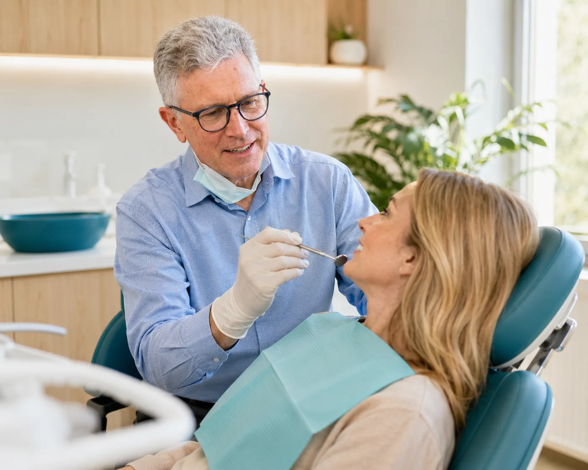
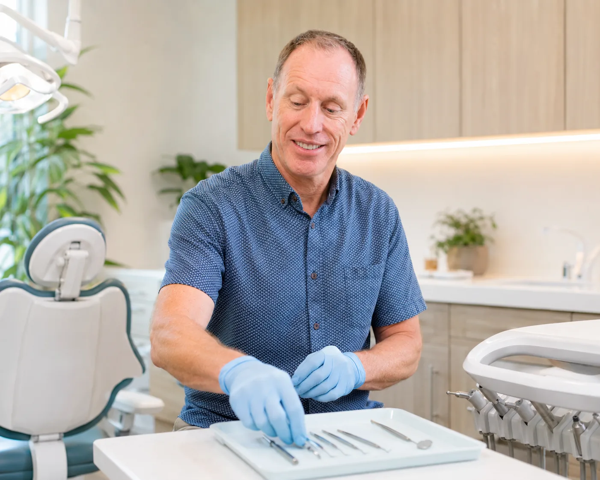
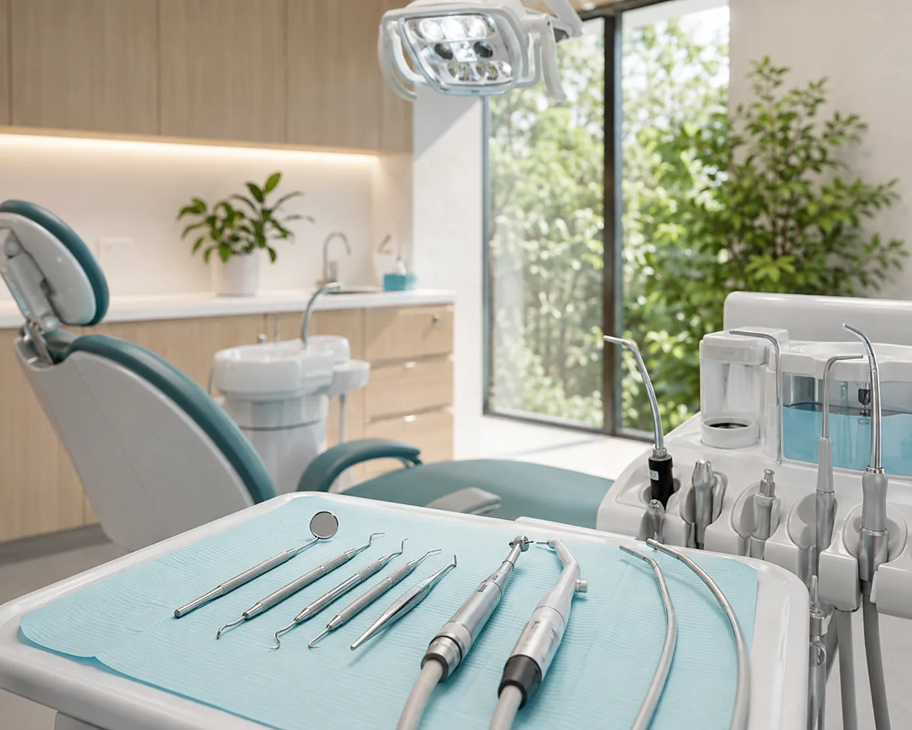

Routine care
Check-ups & preventive care
Regular examinations and professional care can help identify changes early and support healthier teeth and gums over time.
- Routine dental examinations
- Professional cleans and hygiene support
- Preventive advice tailored to your needs
- Ongoing maintenance planning


